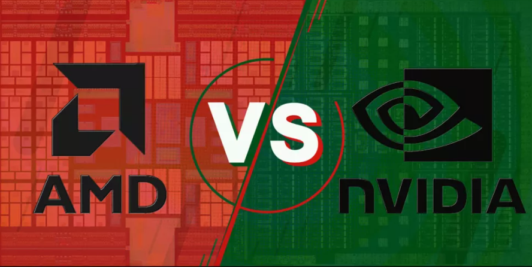
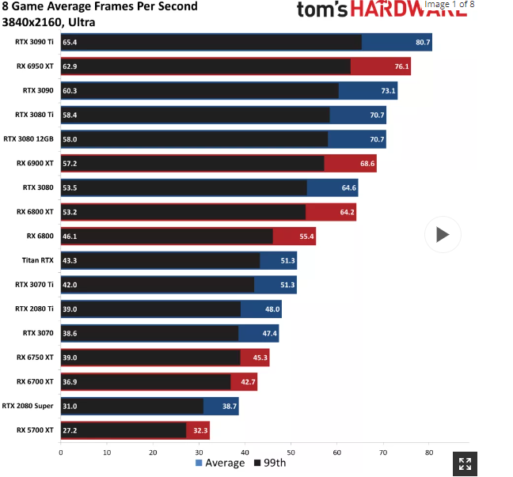
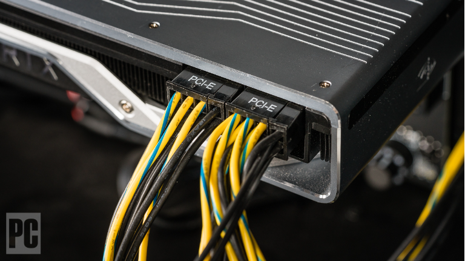

GPU(Graphics processing unit

Getting the best graphics card is key if you're looking to buy the best gaming PC or looking to build a PC on your own. The graphics card is even more important than the CPU. Unfortunately, the process of figuring out how to buy a GPU can be intimidating. There's so much to consider, from the type of monitor you're using to the size of your PC case to the game settings you plan to play at.
Quick tips
Save some money for the CPU. If you spend all your money on graphics and don't opt for one of the best CPUs, your system might score well on synthetic benchmarks but won't do as well in real game play (due to lower minimum frame rates).
Match your monitor resolution. Many mainstream cards are sufficient for gaming at 1080p resolutions at between 30-60 fps, but you'll need a high-end card for resolutions at or near 4K resolution with high in-game settings on the most demanding titles. So be sure to pair your GPU with the best gaming monitor for your needs
Consider your refresh rate. If your monitor has triple-digit refresh rates, you'll need a powerful card and processor to reach its full potential. Alternatively, if your monitor tops out at 60Hz and 1080p, there's no point in paying extra for a powerful card that pushes pixels faster than your display can keep up with.
Do you have enough power and space? Make sure your PC case has enough room for the card you're considering, and that your power supply has enough watts to spare, along with the correct type of power connectors (up to three 8-pin PCIe, depending on the card).
Check the MSRP before buying. A good way to tell if you're getting a deal is to check the launch price or MSRP of the card you're considering before buying. Tools like CamelCamelCamel can help separate the real deals from the fake mark-up-then-discount offerings.
AMD or NIVIDIA?
There are hundreds of graphics cards from dozens of manufacturers, but only two companies actually make the GPUs that power these components: Nvidia and AMD — though Intel's Xe Graphics has started to ship for laptops and should also come to desktops in the next few months. With its RX 6000 cards, AMD is more competitive than it has been in years with Nvidia and its current-gen Ampere cards, like the GeForce RTX 3080, in general performance.
That said, the realistically lit elephant in the room that we've been ignoring thus-far is real-time ray tracing. Introduced as a major new feature with Nvidia's now previous-generation RTX 20-series cards, "Team Green" is now on its second generation RTX with 30-series GPUs. AMD ("Team Red") stepped into this game in a big way in 2020 with its RX 6000 cards, but it's still on its first go-round with real-time ray tracing, and so lags behind Nvidia on this front.
Still, the rollout of games that make use of (and specifically good use of) ray tracing has been slow. There's no doubt that more games are adding RT support — and many more will in the future as ray tracing is also supported by the Sony PlayStation 5 and Microsoft Series S|X consoles. At present, the list of games with what we would categorize as impressive use of ray tracing remains relatively limited.
In most cases with Intel boards, upgrading to another chip that works in the same socket as your current one will have limited upside. In recent years, chip sockets or chipsets are only compatible for a generation or two of CPU, and once that year or two passes, the next platform is no longer compatible with the ones that came before. (Late-model mainstream AMD CPUs, on the company's AM4 socket, have broken that cycle for the moment.) What that means: Unless you're upgrading from a low-end chip early in a platform's lifecycle to a high-end CPU at the very end, you're not likely to gain too much from an in-place CPU upgrade on a dead-end platform.
AMD vs NIVIDIA Gaming performance
For decades, faster GPUs have enabled game developers to create increasingly detailed and complex worlds. While you can find everything from budget GPUs to high-end offerings from both AMD and Nvidia, when it comes to outright performance, Nvidia has a slight overall lead thanks to the chunky GeForce RTX 3090 Ti.
Beyond the pole position, however, it's a closer match. If you look at the GPU benchmarks hierarchy, you'll see that AMD's RX 6950 XT owns the top spot at 1080p and 1440p, and Nvidia only wins at 4K or in ray tracing games. Of the top ten fastest GPUs, four are AMD and six are Nvidia, but part of that is thanks to quantity rather than truly different GPUs — the RTX 3080 12GB takes a bit of RTX 3080 Ti and a bit of RTX 3080 and mixes them together into a card that ended up matching the 3080 Ti at a lower price point.
This is just an example of the few factors that could affect one's choice in buying a gpu. For further insights you could head to toms's hardware to find out more.
How much can you spend?
The price of video cards varies greatly, with super low-end cards starting under $100 and high-end models going for $2,000 or more in the case of the GeForce RTX 3090 Ti. As is often the case, top-end cards aren't worth the money unless for some reason you absolutely have to have the best performance possible, or if you do professional work where 10% more performance will pay for itself over time.
Dropping a tier or two down will greatly improve the bang for the buck. Currently, for example, an RTX 3080 12GB can be had for about $1,000. That's half as much as the RTX 3090 Ti, for about 15% less performance on average. The same goes for the AMD side. The RX 6900 XT(opens in new tab) costs about $1,050 while the RX 6700 XT(opens in new tab) can be had for half that much. There's no question about the 6900 being faster, but is it worth paying double the price? Only you can decide.
How to buy a GPU:Which specs matter and which don't
Graphics card memory amount: Critical. Get a card with at least 6GB, and preferably 8GB or more for gaming at 1080p. You'll need more memory if you play with all the settings turned up or you install high-resolution texture packs. And if you're gaming at very high resolutions such as 4K, more than 8GB is ideal.
Form factor: Very important. You need to make sure you have room in your case for your card. Look at the length, height, and thickness. Graphics cards can come in half-height (slim), single-slot, dual-slot, and even triple-slot flavors (or more). Most gaming-focused cards will be full-height and occupy two or more expansion slots, with current-gen cards being thicker and larger than many previous-gen models. Even if a card technically only takes up two slots in your case, if it has a big heatsink and fan shroud, it can block an adjacent slot. If you have a tiny Mini-ITX motherboard, look for a 'mini' card, which is generally 8 inches (205mm) long or less. However, some cards that carry this moniker are longer, so check the specs.
Power Connectors: Important. All serious gaming cards draw more than the standard maximum of 75W that the x16 PCIe slot provides. These cards require connecting supplemental PCIe power connectors that come in 6- and 8-pin varieties. Nvidia's own RTX 30-series cards come with 12-pin connectors, but the cards also include 8-pin to 12-pin adapters. Some cards have one of these connectors, some two or even three, and 6- and 8-pin ports can exist on the same card. If your power supply doesn't have the supplemental connectors you need, you'll want to upgrade—adapters that draw power from a couple of SATA or Molex connectors are not recommended as long-term solutions.
Ports: Critical. Some monitors have HDMI, others use DisplayPort, and some older units only have DVI. A few monitors also support USB Type-C routing DisplayPort signals, but these are relatively rare for the time being. Make sure the card you plan to buy has the connectors you need for your monitor(s), so you don't have to buy an adapter—or potentially a new display (unless you want to).
Clock speed: Somewhat important. Among cards with the same GPU (ex: an RTX 3060 Ti), some will be manufacturer overclocked to a slightly higher speed, which can make a modest 3–5% difference in frame rates. Clock speed isn't everything, however, as memory speed, core counts and architecture need to be factored in. Better cooling often trumps clock speed as well, on cards with the same GPU.
How to buy a GPU:Which specs matter and which don't
Graphics card memory amount: Critical. Get a card with at least 6GB, and preferably 8GB or more for gaming at 1080p. You'll need more memory if you play with all the settings turned up or you install high-resolution texture packs. And if you're gaming at very high resolutions such as 4K, more than 8GB is ideal.
Form factor: Very important. You need to make sure you have room in your case for your card. Look at the length, height, and thickness. Graphics cards can come in half-height (slim), single-slot, dual-slot, and even triple-slot flavors (or more). Most gaming-focused cards will be full-height and occupy two or more expansion slots, with current-gen cards being thicker and larger than many previous-gen models. Even if a card technically only takes up two slots in your case, if it has a big heatsink and fan shroud, it can block an adjacent slot. If you have a tiny Mini-ITX motherboard, look for a 'mini' card, which is generally 8 inches (205mm) long or less. However, some cards that carry this moniker are longer, so check the specs.
Power Connectors: Important. All serious gaming cards draw more than the standard maximum of 75W that the x16 PCIe slot provides. These cards require connecting supplemental PCIe power connectors that come in 6- and 8-pin varieties. Nvidia's own RTX 30-series cards come with 12-pin connectors, but the cards also include 8-pin to 12-pin adapters. Some cards have one of these connectors, some two or even three, and 6- and 8-pin ports can exist on the same card. If your power supply doesn't have the supplemental connectors you need, you'll want to upgrade—adapters that draw power from a couple of SATA or Molex connectors are not recommended as long-term solutions.
Ports: Critical. Some monitors have HDMI, others use DisplayPort, and some older units only have DVI. A few monitors also support USB Type-C routing DisplayPort signals, but these are relatively rare for the time being. Make sure the card you plan to buy has the connectors you need for your monitor(s), so you don't have to buy an adapter—or potentially a new display (unless you want to).
Clock speed: Somewhat important. Among cards with the same GPU (ex: an RTX 3060 Ti), some will be manufacturer overclocked to a slightly higher speed, which can make a modest 3–5% difference in frame rates. Clock speed isn't everything, however, as memory speed, core counts and architecture need to be factored in. Better cooling often trumps clock speed as well, on cards with the same GPU.